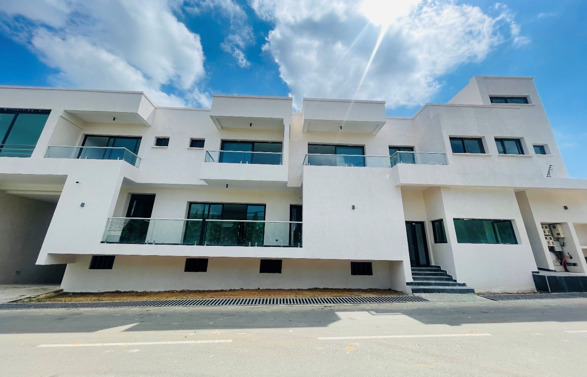

Substrate reading
Humidity, surface condition, mechanical sensitivity and existing defects are reviewed before any application starts.
We secure compatibility between substrate, use, traffic, maintenance, safety and final finish to avoid delamination, poorly prepared rework, unnecessary downtime and premature floor degradation.
Humidity, surface condition, mechanical sensitivity and existing defects are reviewed before any application starts.
The resin system is selected according to traffic, loads, expected cleaning, slip resistance and finishing level.
Preparation, coating layers, markings, visible details and cure timing are managed in a clean execution sequence.
The floor is delivered with a level of durability, visual clarity and restart readiness that fits the environment.
We structure this expertise around substrate diagnosis, resin-system design and application through to return to service, so the full life cycle of a technical floor is covered properly.
We start from the reality of the existing floor, because the performance of a resin system depends first on the quality of the substrate, its humidity, its stability, its actual use and the mechanical constraints it must absorb.
Structured reading of floor condition, visible defects and installation risks.
Qualification of traffic, loads, cleaning conditions and floor exposure.
Clear orientation on required preparation and the level of system to consider.
We specify the coating according to expected performance, level of use, safety requirements, visual finish, possible marking and long-term maintenance ease.
Selection of the resin system, its performance level and the useful finish logic.
Reading of zoning, lines, paths or functional wayfinding if required.
Preparation, layer sequencing and site constraints anticipated in advance.
We manage substrate preparation, system application, finishing details and return to circulation to avoid durability defects, unnecessary downtime and rework that weakens the final result.
Organization of preparation, coating layers and site control points.
Reading of final quality, visible details and areas to verify before restart.
Restart schedule coherent with the technical constraints of the installed system.
Our method connects substrate diagnosis, use qualification, system choice, site preparation and return to activity within the same execution logic.
Analysis of the substrate, visible defects, use constraints and sensitive zones.
Reading of traffic, loads, cleaning requirements and safety or marking needs.
Definition of the system, finish and installation scenario adapted to the actual context.
Preparation, coating, finishing and controls within a clean and controlled execution sequence.
Validation of performance, cure timing and restart on a more reliable operating base.
We support both owners, operators and decision-makers who want stronger floor performance, and the partners who prepare, apply, control or return the space to circulation alongside us.
Our resin-flooring works and high-use environments demonstrate a real ability to combine performance, visual clarity and controlled return to service.

A direct reference for spaces where floor durability, visual clarity and operational consistency must remain aligned.

A coherent project type for the resistance, circulation, marking and maintenance demands of technical flooring.
A relevant application for environments where floor robustness must remain compatible with the image of the place.
This expertise also concerns parking areas, ramps, utility rooms, technical circulation paths and surfaces that require stronger long-term performance, clearer visual reading and simpler maintenance.